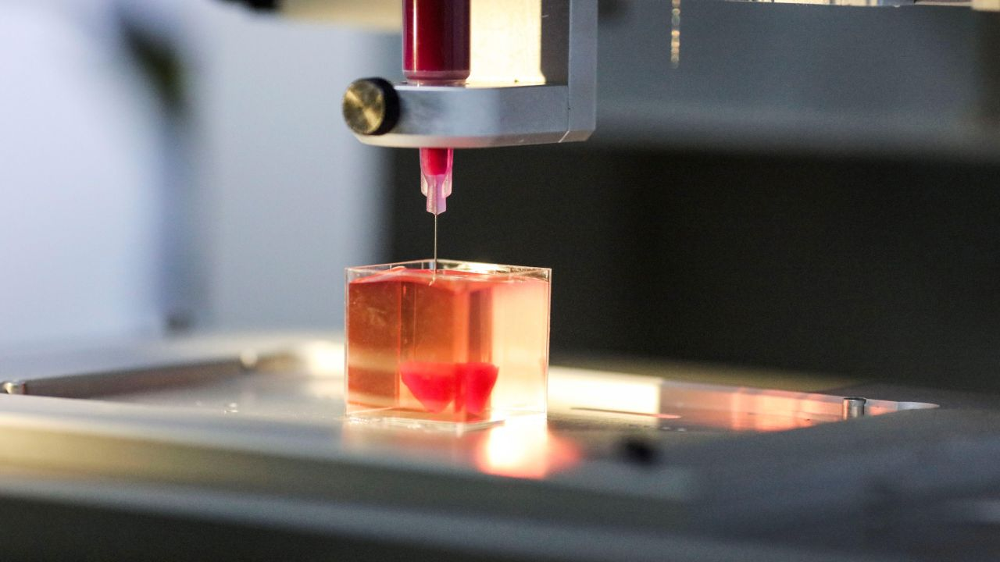

Opinión

Opinión | |
| En mi opinion, me parece bien que los doctores o personas especialistas en medicina se ayuden de la tecnologia y descubran nuevos metodos para ayudar a personas, en este caso sobre la fabricación de órganos artificiales para trasplantes, ayuda a la ciencia a avanzar con pruebas de organos bioartificiales cy funcionales mediantes una impresoras 3D o etc, y esto es para las personas, salvando la vidas en un futuro. | |